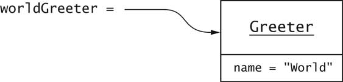
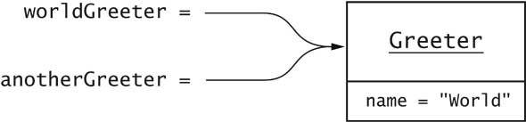
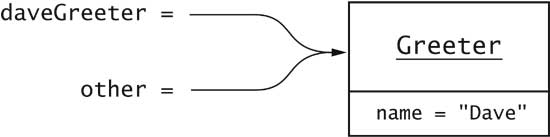
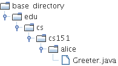

LinkedList<String> countries = new LinkedList<String>();
countries.add("Belgium");
countries.add("Italy");
countries.add("Thailand");

new Greeter("World")
new Greeter("World").sayHello()
Greeter worldGreeter = new Greeter("World");
String greeting = worldGreeter.sayHello();
javac GreeterTest.javaNote that Greeter.java is automatically compiled.
java GreeterTest

y = Math.sqrt(x);
for (int i = 1; i <= n; i++)
{
. . .
}
// i no longer defined here
Greeter worldGreeter = new Greeter("World");

Greeter anotherGreeter = worldGreeter;

anotherGreeter.setName("Dave");
// now worldGreeter.sayHello() returns "Hello, Dave!"
worldGreeter = null;
if (worldGreeter == null) . . .
public boolean equals(Greeter other)
{
if (this == other) return true;
return name.equals(other.name);
}
public Greeter(String name)
{
this.name = name;
}
public void copyNameTo(Greeter other)
{
other.name = this.name;
}
Greeter worldGreeter = new Greeter("World");
Greeter daveGreeter = new Greeter("Dave");
worldGreeter.copyNameTo(daveGreeter);
 public void copyLengthTo(int n)
{
n = name.length();
}
public void copyGreeterTo(Greeter other)
{
other = new Greeter(name);
}
int length = 0;
worldGreeter.copyLengthTo(length); // length still 0
worldGreeter.copyGreeterTo(daveGreeter) // daveGreeter unchanged
java.util
javax.swing
com.sun.misc
edu.sjsu.cs.cs151.alice
package edu.sjsu.cs.cs151.alice;
public class Greeter { . . . }
java.util.ArrayList
javax.swing.JOptionPane
import java.util.Scanner;
. . .
Scanner a; // i.e. java.util.Scanner
import java.util.*;
import java.*.*; // NO
import java.util.*;
import java.sql.*;
. . .
java.util.Date d; // Date also occurs in java.sql
edu.sjsu.cs.sjsu.cs151.alice.Greetermust be in subdirectory
basedirectory/edu/sjsu/cs/sjsu/cs151/alice
javac edu/sjsu/cs/sjsu/cs151/alice/Greeter.javaor
javac edu\sjsu\cs\sjsu\cs151\alice\Greeter.java
java edu.sjsu.cs.cs151.alice.GreeterTest
String name = null;
int n = name.length(); // ERROR
Exception in thread "main" java.lang.NullPointerException
at Greeter.sayHello(Greeter.java:25)
at GreeterTest.main(GreeterTest.java:6)
public void read(String filename) throws FileNotFoundException
{
FileReader reader = new FileReader(filename);
. . .
}
public void read(String filename)
throws IOException, ClassNotFoundException
public static void main(String[] args)
throws IOException, ClassNotFoundException
try
{
code that might throw an IOException
}
catch (IOException exception)
{
take corrective action
}
exception.printStackTrace();
System.exit(1);
FileReader reader = null;
try
{
reader = new FileReader(name);
...
}
finally
{
if (reader != null) reader.close();
}
"Hello, " + name
int n = 7;
String greeting = "Hello, " + n;
// yields "Hello, 7"
Date now = new Date();
String greeting = "Hello, " + now;
// concatenates now.toString()
// yields "Hello, Wed Jan 17 16:57:18 PST 2001"
String input = "7";
int n = Integer.parseInt(input);
// yields integer 7
ArrayList<String> countries = new ArrayList<String>();
countries.add("Belgium");
countries.add("Italy");
countries.add("Thailand");
for (String country : countries) . . .
LinkedList<String> countries = new LinkedList<String>();
countries.add("Belgium");
countries.add("Italy");
countries.add("Thailand");
for (int i = 0; i < numbers.length; i++)
numbers = new int[0];
int[][] table = new int[10][20];
int t = table[i][j];
public class Greeter
{
. . .
private static Random generator;
}
public class Math
{
. . .
public static final double PI = 3.14159265358979323846;
}
public static Greeter getRandomInstance()
{
if (generator.nextBoolean()) // note: generator is static field
return new Greeter("Mars");
else
return new Greeter("Venus");
}
Greeter g = Greeter.getRandomInstance();
name
sayHello
Greeter
ArrayList
PI
MAX_VALUE
String getName()
void setName(String newValue)
public boolean isPolite()
public void setPolite(boolean newValue)
public String sayHello()
{
return "Hello, " + name + "!";
}
public String sayHello() {
return "Hello, " + name + "!";
}
public class Greeter
{
private String name;
public Greeter(String aName) { . . . }
. . .
}
Good: if (x > Math.sqrt(y))
Bad: if(x>Math.sqrt (y))
Good: int[] numbers
Bad: int numbers[]
Good: h = HASH_MULTIPLIER * h + val[off];
Bad: h = 31 * h + val[off];